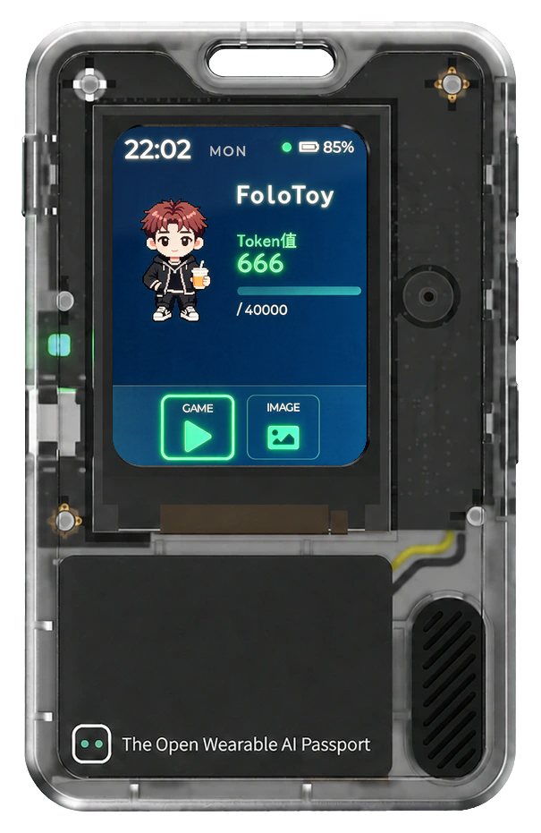

明信片
编辑正面与联系方式，同步预览显示效果。
明信片预览
00:00
240 × 320 · 实际屏幕比例
先按一按，再带在身边。

用量首页 · 今日 · 音量 35%
示例数据 · 使用当前网页草稿 · 操作不写入设备
屏幕显示当前卡片、页面顺序与明信片草稿。修改其他页面的设置后，回来即可体验；重新体验会恢复网页设置。
声音在浏览器播放，使用当前选中的录音和音量。
查看 AI Passport 本机状态，检测屏幕、按键与传感器。
这里读取 AI Passport 本机数据，与电脑系统检测卡片不同。分区显示分配容量；电池 mAh 为产品额定值，不是剩余容量。未连接、过期或不支持的项目显示 --。
连接设备后，点击按钮在实机显示测试图案。按任意键退出，约 15 秒自动恢复。
等待测试
让桌边的小伙伴，回应你的每一次操作。
仅在设备宠物页生效。电脑需运行新版同步程序；发送、撤销和继续前，请聚焦 Codex 聊天输入框。
把喜欢的画面，放进口袋里的屏幕。
开启常用页面，按你的习惯排列。
至少保留一个页面。保存后，双击设备确定键按此顺序切换。
连接设备后读取检测配置
适配 TrafficMonitor 1.86 x64
240 × 320 · 示例数据
编辑正面与联系方式，同步预览显示效果。
240 × 320 · 实际屏幕比例
选择一种氛围，或调成自己的颜色。
连接设备后可读取与保存配色
连接设备后读取设置
240 × 320 · 实际屏幕比例
保留原默认图，可导入静态图或 GIF。
显示与声音使用顶部“保存到设备”；Logo 单独保存，下次开机显示。